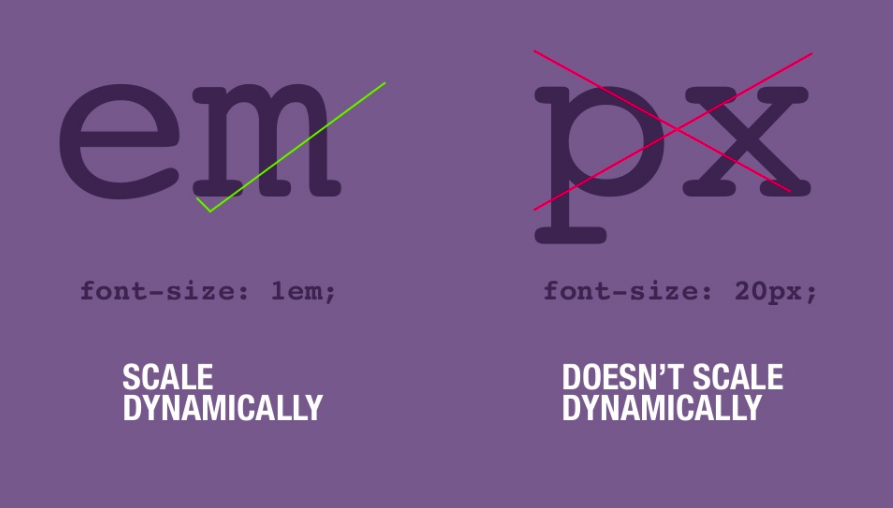

Website Layout
Using Cascading Style Sheets
Wireframes examples

The Box Model

Each box has the following components:
- Content: The text, image or content inside the box.
- Padding: The space between the content and the border of the box.
- Border: The edge of the box
- Margin: The space between the box and surrounding elements.
- By default the box will take the dimensions of the content
- You can specify the dimensions using px, %, or ems.
Block or Inline
- All HTML boxes are by default block or inline
- Block: The element will take the full width of the parent container and will start in a new line. (h1, p, div)
- Inline: The element will only take the space of its content and will not break the flow of content (b, i, span)
Changing Box Behavior - Display Property
Eack box has a default behavior - block or inline -that can be changed with the display property.
This is one block element
This is another block element
This is another block element This is an inline element inside a block element and this is another inline element
This is a block element acting line an inline-block
This is another block element acting line an inline-block
- Block: Displays each element in its own line.
- Inline: Displays the element beside the previous one. Custom height and width will be lost.
- inline-block: Makes a box element inline, retaining it's block element properties.
- display: block; / display: inline; / display: inline-block;
- We also have display:flex and display:grid for page layouts.
Floats
Float is a positioning property that allows one element to wrap around another.
- Mostly used to display images inside content.
- Previously used to make full page layouts.
- Floated elements remain a part of the flow of the page.
- Left: Floats element to the left.
- Right: Floats element to the right.
- None: It is the element's default.
- To clear the floats use clear: none, left or right.
A little bit of Layout History..
- Normal HTML Flow.
- Tables.
- Positioning - Floats.
- Flexbox. Aligns elements in a single axis, either rows or columns (2015).
- Grid. Works in two dimensios. Rows and columns at the same time. (2017)
- Multicolumn (working draft as of 10/2019).
 https://www.researchgate.net/figure/Example-of-a-main-webpage-layout-in-Blackmon-et-al-2002-2003-2005_fig2_235208267
https://www.researchgate.net/figure/Example-of-a-main-webpage-layout-in-Blackmon-et-al-2002-2003-2005_fig2_235208267

Units for web
Absolute Units
- px These sizes will stay the same regardless of the screen size.
Relative Units
- % a percentage of the parent element.
- em Ems are a relative unit based on the base font size (usually 16px) 1em = 16px
- Convert pixels to ems
- vw % relative to the screen width (viewport)
- vh % relative to the screen height (viewport)


The Grid
- It's the latest and most powerful CSS layout system available.
- With the grid you can control the size and position of the "boxes" and their contents in the page.
- You can alter the visual display of the elements without affecting the semantic markup.
- You can specify the number of rows and columns.
- It's fast to develop.
- reduced code size
- Most common grid size is 12 because is easily divided by 2, 3, 4, 6
How does the grid work?
- Column and Row count are applied to the parent container to define the structure of the grid.
- Placement properties are applied to the individual elements inside the grid.
- The parent container is divided in segments according to the number of selected columns and rows.

Grid Structure

The Parent Container
The parent element determine the the rows and columns
- display:grid;
Columns
- grid-template-columns: 300px 300px 300px;
- grid-template-columns: 300px 300px auto 300px;
- grid-template-columns: 25% 25% 25% 25%;
- grid-template-columns: repeat(3, 1fr);
- grid-template-columns: 200px repeat(3, 1fr);
- grid-template-columns: repeat(auto-fill,minmax(25%, 1fr));
- grid-template-columns: repeat(12, minmax(0, 1fr));
Rows
- grid-template-rows: 300px 300px;
- grid-template-rows: 300px 200px auto;
- grid-template-rows: repeat(2, 1fr);
- grid-template-rows: 200px repeat(2, 300px);
- grid-template-rows: 3fr repeat(2, 1fr);
- grid-template-rows: repeat(3, minmax(150px, auto));
Children Containers
Use them for specific positioning of rows and columns.
- grid-column: 1 / 13; (lines 1 to 13)
- grid-row: 2 /4; (starts on second row to the 4th)
The Parent Container
- You can assign spacing between colums and rows:
- grid-column-gap:
- grid-row-gap:
- grid-gap: is used for column and rows
- gap: shorthand for column and rows
- Align and justify items
- align-items: start | end | center | stretch
- justify-items: start | end | center | stretch (items have to be smaller than the grid)
- If you use absolute values on your items, the grid might be larger and you can position the items.
- align-content: start | end | center | stretch | space-around | space-between | space-evenly
- justify-content: start | end | center | stretch | space-around | space-between | space-evenly (items have to be smaller than the grid)
The Children Grid Containers

- Positions the elements inside the columns and span across the selected number of columns
- grid-column-start:
- grid-column-end:
- grid-column: Shorthand for grid-column start and end (2/5)
- Positions the elements inside the rows and span across the selected number of rows
- grid-row-start:
- grid-row-end:
- grid-row: Shorthand for grid-row start and end
- Justify and align individual items inside the grid
- justify-self: start | end | center | stretch
- align-self: start | end | center | stretch
Grid Alignment
Justify
Align

Grid Overlap
- One of the best things of Grid is that elements can overlap.
- Give each element a class
- Use grid-row and the line numbers to determine the column span.
- Use grid-column and line numbers to determine the vertical starting position of the element.
Grid Template Areas
Parent Container
- display: grid;
- grid-template-areas:
"one one two two"
"three three three three"
"fourt five . seven"
"four . . seven"
". six six .";
(use dots to represent empty cells) - grid-auto-rows: minmax(100px, auto);
- grid-gap:10px;
Children Containers
assign a name to each container
- .one {grid-area:one;}
- .two {grid-area:two;} etc...
What's the difference between Flex vs Grid?
Flex
- It only works in one direction: Horizontally or vertically.
- Flex is good when you need to align content.
- It works better with simple layouts that follow a natural flow.
- Flex works around your content.
- Great for use in horizontal navigation.
You can practice Flex placement with this game:
Grid
- You can set both directions at the same time in one container.
- It gives you more control over the layout.
- It adds a gap between the elements without having to use margins.
- It lets you overlap elements.
- Use grid when the layout design is more specific.
You can practice Grid placement with this game: